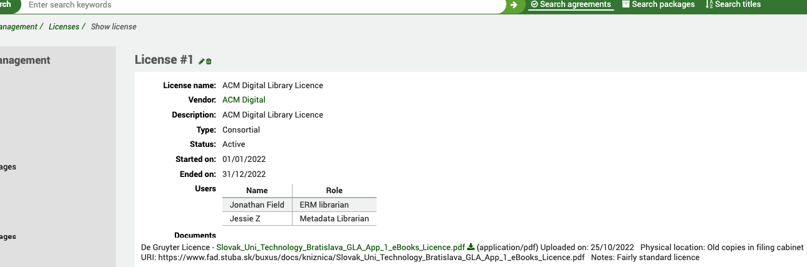
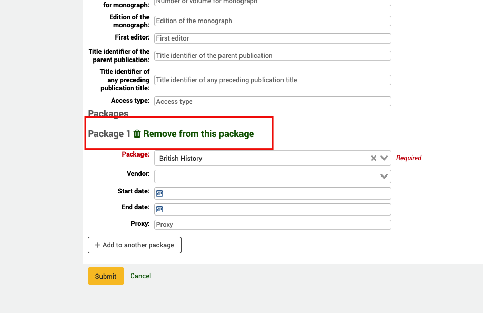

电子资源管理
检索条
The search bar allows you to quickly search agreement records and (Local) packages or titles. Packages or titles from third-party knowledge bases are not searchable from here. Go to the eHoldings link to search these.
电子资源管理主页
在这里：更多 > 电子资源管理
协议
在 ERM（电子资源管理）的术语中，协议描述哪些订阅的电子资源可以访问，而许可则描述了可以对这些资源进行什么操作。
创建
在开始创建新的协议记录前，确保你已经根据需要查看过 ERM_ 授权值 并让用户具有了修改 ERM 记录的 用户权限。同时也要确保你已经查看过 ERM 系统参数。
创建一条协议记录
在 ERM 主页点击左手边菜单的 协议 链接
在这里： 更多 > 电子资源管理 > 协议
使用协议页面顶部的“+ 新协议”按钮
You are required to give the Agreement a Name, Description and Status. The status determines if this agreement is active or not. All other fields are optional.
The agreement can, optionally, be attached to an existing Vendor record in the acquisitions module. This allows you to keep a record of who supplied the e-resources and also to create purchase orders against it.
The Closure reason field will stay grayed out until you give the agreement the status of “closed” at which point it will become active.
The License info box can be used here if you don’t intend to use the Licenses part of ERM but still want to record information about a license alongside the agreement.
Periods - Multiple periods can be attached to an Agreement record. The period describes the duration of the relationship you have with the provider. Every time you renew an agreement you can record a new agreement period so that you have a historical record of how many times it has been renewed. You can also create agreement periods for future dates. So, for example, you may have a current period, some historical periods and an upcoming period. The cancellation deadline can be used in reporting to alert you to upcoming end dates and therefore alert you to initiate the renewal with the provider.
Users - In this context, a user is a staff user who has some involvement with the Agreement. They could be staff involved in procuring the e-resource, sorting out the licensing, the subject specialist etc. This means we can attach multiple users to an agreement. In order to be attached to an agreement a staff user must have the ERM permission, otherwise they will not appear in the list when you try and select a user. This also keeps the list of patrons to a small, manageable, size by excluding your library patrons. When you attach a user you also assign them a role from the ERM_USER_ROLES authorized value.
Licenses - If you want to link an agreement to a license record you created under licenses use the “Add new license” button. An agreement can be attached to one or more license records. Select the license name from the drop-down list of licenses you have previously created and give it a status. The Physical location is where you may have stored a paper version of the document within your library. You can also specify notes and a URI (if the license is actually available online).
Related Agreements - A related agreement is any agreement which has some relevance to an agreement already in the system. For example, an agreement which has superseded an existing agreement. You can link an agreement to one or many other agreements.
Agreement Documents - You can attach one or more documents to an agreement record. This is not meant to be for license documents (which are attached to license records) but other correspondence with a provider, information about the resources etc. If you decide to only record agreement information and not licenses then you can, of course, also attach the license documents themselves. The physical location is where any paper version of the correspondence is held in the library and the URI a link to any online copy.
Search and View an Agreement record
在 ERM 主页点击左手边菜单的 协议 链接
在这里： 更多 > 电子资源管理 > 协议
You will be presented with a list of existing agreements in the system ordered by the agreement name. You can use the table or column filters to search and filter data you are looking for (for example, all agreements with the Status: closed).
Clicking on the Name of the agreement will take you through to the full view.
The full view summarizes all the information you entered when you were creating the agreement. The vendor it is attached to (which is a hypertext link to the vendor record), the Status, any agreement periods, any users associated with the agreement, any related agreements and, importantly, what the agreement covers; that is, which vendor packages are included as part of the agreement. You will notice that the Related agreements field is also a hypertext link to the other agreement and this is bi-directional. The link to the Packages is also a hypertext link and takes you to the eHoldings module.
A package is a collection of e-resource titles which have been bundled together for distribution by a provider/vendor. Rather than selling you a license to use a single title, a vendor will typically sell you a selection of e-resources bundled together in a named package (e.g. Journal Archives). This can often contain 10s or even 100s of titles. Custom packages are often negotiated locally in various parts of the world with providers. The benefit of buying in packages means that the library does not have to undertake individual negotiation with publishers for specific titles, this is left to the provider.
Agreement Filters - At the top of the Agreements page you will notice a Filter box. The purpose of this is to allow you to quickly filter expired agreements or agreements which may have an upcoming renewal (and therefore might require action).
Licenses
A license explains what you can do with the content you have subscribed to. It is, in effect, the contract or Terms of Use.
Get there: More > E-Resource management > Licenses
Licenses work alongside Agreements or, if you’d prefer to simply record a list of licenses you have, it can work on its own.
Create a License Record
From the ERM Home page click on the Licenses link in the left hand menu
Get there: More > E-Resource management > Licenses
Use the + New license button at the top of the Licenses table

You are required to give the License a Name, Description, Type and Status. The status determines if this agreement is active or not. All other fields are optional.
The license can, optionally, be attached to an existing Vendor record in the acquisitions module. This allows you to keep a record of which vendor the license is with.
The license will have both a start date and end date, these may differ from the dates in an agreement period.
Users - In this context, a user is a staff user who has some involvement with the License. They could be staff involved in negotiating or signing the license for example. This means we can attach multiple users to a license. In order to be attached to a license a staff user must have the ERM permission, otherwise they will not appear in the list when you try and select a user. This also keeps the list of patrons to a small, manageable, size by excluding your library patrons. When you attach a user you also assign them a role from the ERM_USER_ROLES authorized value.
License Documents - You can attach one or more documents to a license record. From here you can attach PDF copies of license or terms of use. The physical location is where any paper version of the correspondence is held in the library and the URI provides a link to any online copy.
NB: The file size of any uploaded documents for both licenses and agreements is limited to the value of the max_allowed_packet size in your MariaDB configuration file. If you exceed this size you will get a file size warning. Speak to your system administrator to increase this value.
Search and View a License record
From the ERM Home page click on the Licenses link in the left hand menu
Get there: More > E-Resource management > Licenses
You will be presented with a list of existing licences in the system ordered by the license name. You can use the table or column filters to search and filter data you are looking for (for example, all licences with the Status: expired).
Clicking on the Name of the license will take you through to the full view.
The full view summarizes all the information you entered when you were creating the license. The vendor it is attached to (which is a hypertext link to the vendor record), the Status, Type, start and end dates, any users associated with the license and, importantly, the link to the license document(s).
eHoldings
Definition of terms:
Resource - a resource is an instance of a title. Consequently a resource would have a separate resource ID for each occurrence of the title in a package. For example:-
Teise / Law belongs in
DOAJ
Criminal Justice Abstracts with Full Text
etc.
Knowledge base (KB) - A knowledge base is an extensive database maintained by a knowledge base supplier (for example, EBSCO) that contains information about electronic resources such as title lists and coverage dates etc. Knowledge bases typically organize the resources provided by a content provider into collections or databases that reflect specific content provider offerings, for example packages of e-journals, e-books, or other materials.
Providers - The provider of the e-resource, for example, the vendor, consortia or publisher.
Packages - A collection of e-resource titles bundled together and distributed by a provider.
Titles - The individual e-resources, for example a journal or e-book, usually contained within a package.
在这里：更多 > 电子资源管理
On the left-hand navigation menu you will see links for each provider you have configured in the ERMProviders system preference.
EBSCO
The integration with the EBSCO global knowledge base is facilitated via their HoldingsIQ tool. This is a bi-directional API that allows you to update or read from EBSCO’s knowledge base of millions of titles. Your instance of the EBSCO knowledge base becomes searchable and manageable via Koha using your Customer ID in the configuration. Remember, the knowledgebase always sits at EBSCO, you are just manipulating it through Koha in the same way you would if you were using EBSCOadmin. No content data is held locally in your Koha system.
Packages
Get there: More > E-Resource management > EBSCO > Packages
On the Package home screen you will see a search box
Koha acts as a “proxy” for the EBSCO HoldingsIQ service so any search you do here is done in real-time against the EBSCO knowledgebase (using your Customer ID in the system preference). There are two filters: -
Content type - This filter is provided by EBSCO as part of their HoldingsIQ API and allows you to narrow down your search to a particular content type (as defined by EBSCO).
Select status - This filter is provided by EBSCO as part of their HoldingsIQ API and allows you to narrow down your search to material that you may already have added to your holdings through EBSCOadmin. So, for example, you can search for packages that you have already subscribed to.
Any package which is already selected is indicated by a check mark on the right hand side of the title.
In brackets you can see the EBSCO package ID.
When you click on a package link you will be taken to the full view of the package.
Some information displayed here is brought through from the HoldingsIQ API, you can see the Vendor (this is NOT the Koha vendor), the Content type and the Package type. You can also see from this screen that the package contains (in this case) 877 titles. As with the package list, you can see from here (by the check marks) which titles have been selected and which not.
Clicking on the Show filters link will give you some additional filters to allow you to search within the package for a particular title or group of titles. This can be by Publication type, Selection status (titles already selected, or not, in EBSCOadmin) and a title search box.
Add package to an Agreement
In the example above, you can see that this package has already been added to the existing Agreement record in Koha (called Journal Archives). A package can be added to multiple Agreement records. Clicking the hypertext link will take you to the agreement record.
Once you have made this connection you will see the package listed on the agreement record.
To add to a new package, click on the Add new agreement button and you will be taken to a dialogue box with a list of agreements that can be filtered. Use the Select button to make the connection between the two records.
Use the Delete icon to remove a package from an agreement.
If you try to add a package to the same agreement more than once you will receive the following error message: -
Add/Remove package from holdings
From the package view you are also able to add or remove a complete package from your EBSCO holdings.
This makes an API call via the HoldingsIQ service to add or remove the package from your EBSCO central holdings. Because this is a real-time call you should see your holdings updated in EBSCOadmin as well.
You can also click on a title link here and go into the detail of a specific title in a package.
The Resource # you can see at the top of the screen is the EBSCO resource ID. The metadata you see is also returned by the HoldingsIQ API from the EBSCO knowledge base. You can see the Publication title, name, Publication type, and print/online IDs and the coverage dates. Remember the coverage dates of a title may be different depending on the package that the title is included in. You can also see both the Vendor and the Package (which is a hypertext link back to the full package you have come from).
Add/Remove title from package
You can add or remove a title from a package you are subscribed to
Although you may subscribe to a complete package there may be individual titles you wish to specifically include/exclude. Use the ‘Add/remove title to holdings’ button to do this.
Titles
Get there: More > E-Resource management > EBSCO > Titles
On the Titles home screen you will see a search box
Koha acts as a “proxy” for the EBSCO HoldingsIQ service so any search you do here is done in real-time against the EBSCO knowledgebase (using your Customer ID in the system preference). There are two filters: -
Publication type - This filter is provided by EBSCO as part of their HoldingsIQ API and allows you to narrow down your search to a particular publication type (as defined by EBSCO).
Select status - This filter is provided by EBSCO as part of their HoldingsIQ API and allows you to narrow down your search to titles that you may already have added to your holdings through EBSCOadmin. So, for example, you can search for titles that you have already subscribed to.
Any title which is already selected is indicated by a check mark on the right hand side of the title.
You will also notice that this search also searches for Local titles in addition to EBSCO titles. Any local titles will be indicated above the title list and this is a hypertext link to take you through to the Local titles table.
By clicking on a title you can go into the full record view of it.
At the top you see the Title #. This is the EBSCO title reference. The rest of the metadata all comes from the HoldingsIQ API and includes things like IDs, publishers etc.
You can also see here every Package that this title is contained in. The check mark indicates that you are already subscribed to this package. So, in the example above, we have this title via the ScienceDirect package but not Scholars Portal.
If you click on the Package link you will see the view of that resource within that package.
This includes the coverage provided by that provider.
If you want to selectively add or remove that title from your package holdings you can do that from this screen.
You can also see the EBSCO resource ID on this screen. Remember that the resource ID represents the instance of a title within a package.
If you want to go back to the title record you can click on the Title link.
On the Title page you are also provided with filters to narrow down your search. You get to this by clicking on the Show/Hide filters link.
This is useful if you want to narrow down your query to a specific package or to packages that are already selected in your holdings.
Local
Local holdings are electronic holdings which are not contained in a global knowledge base but, instead (unlike EBSCO holdings) are stored in the local Koha database tables (erm_eholdings_titles).
Titles
Get there: More > E-Resource management > eHoldings > Local > Titles
On the Local Titles home screen you will see a list of currently created local titles.
You can use the table and column filters to narrow down your list to a selected title or group of titles.
By clicking on a title you can go to the full view of the record.
From here you can Edit or Delete the record.
If the record belongs to a locally created package you will see that information here.
If the title is part of more than one package you can use the table filters to restrict your search further. Clicking on the Package link will take you through to the package itself.
Create a new local title record
From the ERM Home page click on the Titles link in the left hand menu under Local.
Get there: More > E-Resource management > eHoldings > Local > Titles
Use the + New Title button at the top of the Titles table
You should see a metadata template. This template is based on KBART metadata.
When you save the title, Koha will also automatically create a bibliographic record for you with as much of the metadata as possible. We map the KBART metadata to MARC21 in the following way: -
publication_title = biblio.title
print_identifier = 020$a||020$z||022$a||022$y
online_identifier = 020$a||020$z||022$a||022$y
date_first_issue_online = 866$a (before ‘-‘)
date_last_issue_online = 866$a (after ‘-‘)
num_first_vol_online = 863$a (before ‘-‘)
num_last_vol_online = 863$a (after ‘-‘)
title_url = 856$u
first_author = biblio.first_author
coverage_depth = title_url ? ‘fulltext’ : ‘print’
notes = $852$z
publisher_name = 260$b
When you save the record and look at the full view you will see a link to the bibliographic record.
At the bottom of the creation/edit template you will see the option to add the title to a local package.
The package record must already exist before you try to link to it from the dropdown menu. You can also specify the Vendor, start and end dates and a reference to a proxy server if one is required for this service (this is not currently used in Koha, for reference only).
A title can belong to multiple packages.
Import a new local title record from a List
If you want to quickly add multiple title records to your Local holdings then you have the option to import from a Koha List.
First of all, create a Koha List (as described elsewhere in this manual) and add some bibliographic information to it (either by creating the record manually or by importing it via z39.50 or Stage MARC records). Once the List has been created you will see it in the table selection.
First select the package you want to add the titles to and then select the list from the selection in the table. Use the Import button to link them together.
You will see a message “import in progress” and the job should be completed in a few moments. You can click on the Job number if you want to view progress.
At this point you should see the titles in both the title list and also attached to your selected package.
Packages
Get there: More > E-Resource management > eHoldings > Local > Packages
On the Local Package home screen you will see a list of currently created local packages.
Clicking on a package name will take you through to the full view.
You can use the table filter to narrow down the titles if you need to.
Clicking on the title will take you to the title full view and clicking on the Vendor will take you through to the vendor record in acquisitions.
From this screen you can also use the Edit or Delete buttons.
When you Edit a package you have the option to attach it to an Agreement you have already created.
This package will then be viewable on the agreement record.
Create a new local package record
Get there: More > E-Resource management > eHoldings > Local > Packages
Select the + New package button
The Package name is a required field. You must have already created your agreement prior to attaching it to a package.
The Vendor, Type, Content type and Notes fields are optional.
Remove a local title from a package record
Get there: More > E-Resource management > eHoldings > Local > Titles
Search for the title you want to remove from the Local titles list.
Click through to the title detail and use the Edit button
At the bottom of the screen use the “Remove from this package” link
